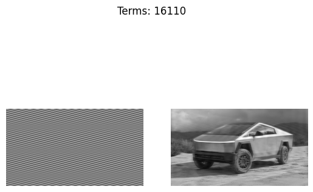

# fourier_synthesis.py
import numpy as np
import matplotlib.pyplot as plt
image_filename = "../img/cybertruck2.png"
def calculate_2dft(input):
ft = np.fft.ifftshift(input)
ft = np.fft.fft2(ft)
return np.fft.fftshift(ft)
def calculate_2dift(input):
ift = np.fft.ifftshift(input)
ift = np.fft.ifft2(ift)
ift = np.fft.fftshift(ift)
return ift.real
def calculate_distance_from_centre(coords, centre):
# Distance from centre is √(x^2 + y^2)
return np.sqrt(
(coords[0] - centre) ** 2 + (coords[1] - centre) ** 2
)
def find_symmetric_coordinates(coords, centre):
return (centre + (centre - coords[0]),
centre + (centre - coords[1]))
def display_plots(individual_grating, reconstruction, idx):
plt.subplot(121)
plt.imshow(individual_grating)
plt.axis("off")
plt.subplot(122)
plt.imshow(reconstruction)
plt.axis("off")
plt.suptitle(f"Terms: {idx}")
#plt.pause(0.01)
# Read and process image
image = plt.imread(image_filename)
image = image[:, :, :3].mean(axis=2) # Convert to grayscale
# Array dimensions (array is square) and centre pixel
array_size = len(image)
centre = int((array_size - 1) / 2)
# Get all coordinate pairs in the left half of the array,
# including the column at the centre of the array (which
# includes the centre pixel)
coords_left_half = (
(x, y) for x in range(array_size) for y in range(centre+1)
)
# Sort points based on distance from centre
coords_left_half = sorted(
coords_left_half,
key=lambda x: calculate_distance_from_centre(x, centre)
)
plt.set_cmap("gray")
ft = calculate_2dft(image)
# Show grayscale image and its Fourier transform
plt.subplot(121)
plt.imshow(image)
plt.axis("off")
plt.subplot(122)
plt.imshow(np.log(abs(ft)))
plt.axis("off")
#plt.pause(2)
# Reconstruct image
fig = plt.figure()
# Step 1
# Set up empty arrays for final image and
# individual gratings
rec_image = np.zeros(image.shape)
rec_grating = []
individual_grating = np.zeros(
image.shape, dtype="complex"
)
idx = 0
cnt = 0
for coords in coords_left_half:
# Central column: only include if points in top half of
# the central column
if not (coords[1] == centre and coords[0] > centre):
idx += 1
symm_coords = find_symmetric_coordinates(
coords, centre
)
# Step 3
# Copy values from Fourier transform into
# individual_grating for the pair of points in
# current iteration
individual_grating[coords] = ft[coords]
individual_grating[symm_coords] = ft[symm_coords]
# Step 4
# Calculate inverse Fourier transform to give the
# reconstructed grating. Add this reconstructed
# grating to the reconstructed image
rec_grating = calculate_2dift(individual_grating)
rec_image += rec_grating
# Clear individual_grating array, ready for
# next iteration
individual_grating[coords] = 0
individual_grating[symm_coords] = 0
cnt += 1
# Don't display every step
if cnt % 100 == 0:
display_plots(rec_grating, rec_image, idx)
display_plots(rec_grating, rec_image, idx)
#plt.show()